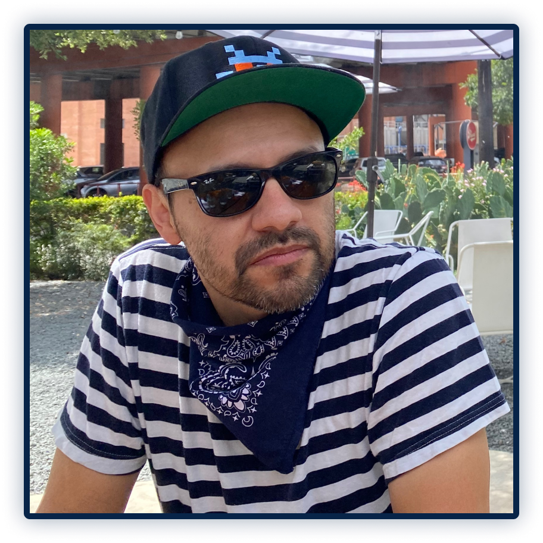

ABOUT ME
Hello, I’m Christopher Pantoja but you can call me “pants”. I’m a UX Designer from San Antonio. I’m interested in creating a better user experience in all that I do.
I’ve been interested in design since a very young age. It was either illustration, graphic design, architecture and eventually web and UI design. I just enjoy creating.
Thanks for stopping by, if you have any questions I would love to hear from you.